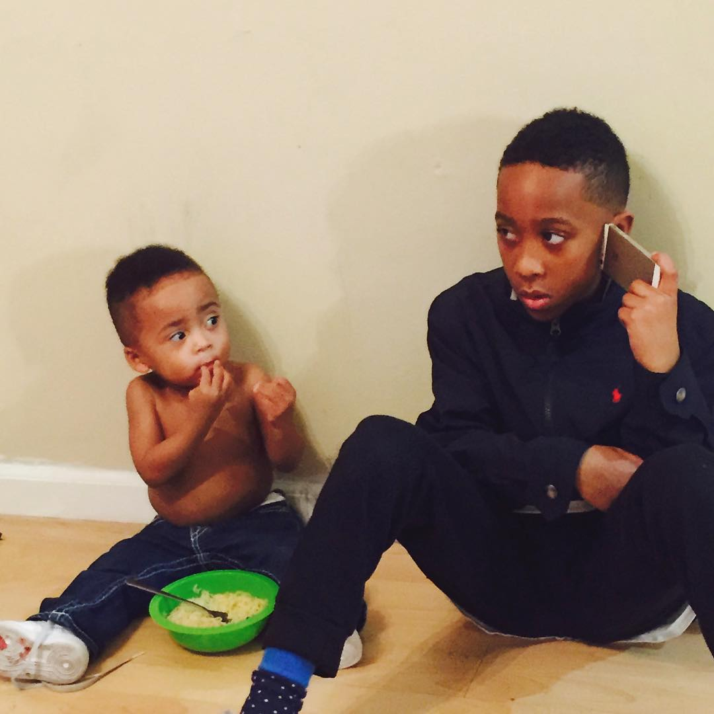

CHILDREN are taught hate. Let's embrace LOVE
If kids are interested they'll learn.
If you notice the Derrick is looking up to Landen. That is Life. One generation learning from the next. In whatever way Landen has captivated Derrick's attention.
our responsibility as "their" village is to engage an teach